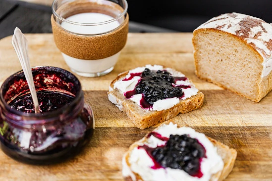

Welcome to Nutty's Kitchens' spice page — a place where I offer honest and sincere, homely advice on everything spicy so you can put a new spark of life into your kitchen.
Welcome to the world of Nutty's tantalizingly irresistible Spice Pantry, where her love of food layered with flavours from around the world meet every day humble ingredients to make a little bit of magic.
And before you ask, no! That's not how my pantry looks above ^-^ That would be completely impracticle. It's actually an image generated purely with Artificial Intellegence, not a photo' as you might have first thought!
Cooking on a Budget
Times can be tough when it comes to putting together a good square meal that is as tasty as you would expect to get in a decent restaurant. So I hope I bring you some inspiration and know-how in the pages ahead. The cost of ingredients and cooking is never far from my mind, so you will find very few lavishly expensive items in my dishes. Just lots of flavour

budget doesn't mean bread and jam!
Cooking on a Budget
Times can be tough when it comes to putting together a good square meal that is as tasty as you would expect to get in a decent restaurant. So I hope I bring you some inspiration and know-how in the pages ahead. The cost of ingredients and cooking is never far from my mind, so you will find very few lavishly expensive items in my dishes. Just lots of flavour
budget doesn't mean bread and jam!
Bulking out with veg
Bulking out a dish with veg' is a very old-fashioned way of reducing costs, but at the same time, a way to add so much flavour! Veg' haters will never know they are there! Crafty, unless you tell them of course ;¬)
Throughout my recipes you will find that the base to most English-style cooking starts with, what is known as, the Holy Trinity! This is simply carrots, onions and celery, with a little twist here and there such as adding a little fresh garlic. Taste starts here!
the holy trinity: carrots, onion, celery
Freeze for another day
Life can be so busy and hectic that sometimes you just want something super-fast. Every dish I cook will serve more people than I have to feed! This is my cunning ploy for those days when I just don't have time to prepare from fresh. You can freeze meal size portions of all my dishes (unless I specifically say otherwise!) so you can pull something out of the freezer in the morning, knowing that you have a delicious dinner waiting for you in just a few minutes. In fact, you will find that the depth of flavour develops nicely in most cases which is just another added bonus.
when time is of the essence
who needs a takeaway when you have a ping-away!
Click or tap the pic for the recipe!
Latest
New today!
Check out this page for regular updates. Here I will post my latest recipe.
Nutty's One hundredth recipe :¬) My Butter Chicken recipe is for those extra special occasions where you want to impress with a taste of pure luxury. This is not a sweet curry, but one that's delicately spiced, umptuously rich and delicious.